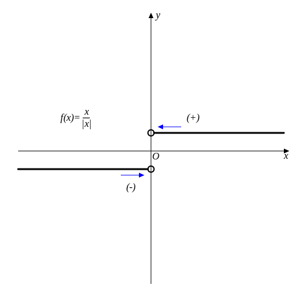

극한limit
f(x)를 분석한다고 할 때, 순간의 값과 순간의 변화율에 대해서 고민 할 수 있습니다. (순간의 값은 단순히 대입하는 것으로 알 수 있습니다.) 뉴턴은 순간의 변화율에 집중했습니다. 순간의 변화율은 변화율(\(\displaystyle{ \Delta x \over \Delta y}\))에서 y를 충분히 작게 함으로써 다음과 같이 정의 할 수 있습니다:
$$ \lim_{ h \to 0}{{f(x+h) - f(x)}\over{h}} $$기호와 의미
lim연산자는 h가 0에 가까워진다라는 의미를 갖고 있습니다. 0에 가까워진다는 뜻이지 0이라는 의미는 아닙니다. 이 연산자를 빠져나올 때, h는 0으로 치부되어버립니다.
$$ \lim_{ h \to 0 }{h} = 0 $$ $$ \lim_{ h \to a }{h} = a $$우리가 극한이라는 연산자를 사용하는 이유는 0에 가까운 어떤 수와 0과 구분하는데 효과적이기 때문입니다. 예를 들면:
$$ \lim_{ h \to 0 }{2h \over h} = \lim_{ h \to 0 }{2\cancel h \over \cancel h} = \lim_{ h \to 0 }{2} = 2 $$ $$ \lim_{ h \to 0 }{(h-h) \over h} = \lim_{ h \to 0 }{0 \over h} = \lim_{ h \to 0 }({0 \times {1 \over h}}) = 0 $$우리는 f(x)의 변화율을 나타내는 함수를 f(x)의 도함수라고 부르고 기호로는 f '(x)(f prime)이라고 읽습니다. 미분 단원에서는 지금까지 다뤄왔던 다양한 함수(n차 함수, 지수함수, 삼각함수)에 대하여 도함수의 정의에 합당하게 산출되므로 도함수의 정의를 기억하고 있어야 합니다.
$$ f'(x) = \lim_{ h \to 0}{{f(x+h) - f(x)}\over{h}} $$※ 이 내용은 n차함수의 도함수를 유도하는데 사용됩니다.
극한의 연산
극한은 덧셈연산이 가능합니다.
$$ \lim_{ h \to a }{f(x)} + \lim_{ h \to a }{g(x)}= \lim_{ h \to a }{\biggl( f(x) + g(x) \biggr)} $$이러한 성질을 이용하여, 복잡한 연산을 좀 더 간단한 연산의 합으로 치환할 수 있습니다.
$$ \begin{aligned} \lim_{ h \to a } {\color{red}k}f(x) &= \lim_{ h \to a }{\underbrace{f(x) + f(x) + \dots + f(x)} \atop k} \\ &= {\underbrace{\underset{ h \to a } {\lim} f(x) + \underset{ h \to a } {\lim} f(x) + \dots + \underset{ h \to a } {\lim} f(x)} \atop k} \\ &= {\color{red}k}\lim_{ h \to a } f(x) \end{aligned}$$\( f(x) = f_1(x) + f_2(x) + f_3(x) + f_4(x) + f_5(x) ... 이라 하면,\)
$$ \begin{aligned} \lim_{ h \to a }{f(x)} &= \lim_{ h \to a }{ \biggl( f_1(x) + f_2(x) + f_3(x) + f_4(x) + f_5(x) ... \biggr)} \\ &=\lim_{ h \to a }f_1(x) + \lim_{ h \to a }f_2(x) + \lim_{ h \to a }f_3(x) + \lim_{ h \to a }f_4(x) + \lim_{ h \to a }f_5(x) ... \end{aligned}$$극한의 곱
$$ \lim_{ h \to a }{f(x)} \times \lim_{ h \to a }{g(x)}= \lim_{ h \to a }{\biggl( f(x) \times g(x) \biggr)} $$극한(limit)연산은 곱셈이 가능하다. 단, 도함수의 곱이 아니다.
$$ \lim_{ h \to a }{f(x)} \times \lim_{ h \to a }{g(x)}= \lim_{ h \to a }{\biggl( f(x) \times g(x) \biggr)} $$※ 이 내용은 도함수의 합, 차, 배, 곱의 결과를 도출하는데 사용됩니다.
n차 함수의 도함수(증명)
\(f (x) = x^n \)에서,
n이 자연수 일 때:
if, n = 1 ( \(f(x) = x^1 = x\) )
$$ \begin{aligned} f'(x) &= \lim_{h \to 0} {f(x + h) - f(x) \over h} \\ &= \lim_{h \to 0} {x + h - x \over h} \\ &= \lim_{h \to 0} {h \over h } \\ &= 1 = n x^{n-1} \end{aligned}$$if, n > 2:
$$ \begin{aligned} f'(x) &= \lim_{h \to 0} {f(x + h) - f(x) \over h} \\ &= \lim_{h \to 0} {(x + h)^n - x^n \over h} \\ &= \lim_{h \to 0} {\cancel{(x + h - x)}((x+h)^{n-1} + (n+h)^{n-2}x + \dots + x^{n-1}) \over \cancel h } \\ &= {\underbrace{x^{n-1} + x^{n-1} + \dots + x^{n-1}} \atop n} = n x^{n-1} \end{aligned}$$n이 0 일 때:
if, n = 0 ( \(f(x) = x^0 = 1\) )
$$ \begin{aligned} f'(x) &= \lim_{h \to 0} {f(x + h) - f(x) \over h} \\ &= \lim_{h \to 0} {1 - 1 \over h} \\ &= 0 = n x^{n-1} \end{aligned}$$n차식의 도함수는 다음과 같다. (n ∈ 0, N)
$$ (x^n)' = nx^{n-1} $$도함수의 합, 차, 배, 곱
합, 차
$$ \begin{aligned} \left\{ f(x) + g(x) \right\}' &= \lim_{h \to 0} {\left\{f(x + h) + g(x + h)\right\} - \left\{f(x) + g(x)\right\} \over h} \\ &= \lim_{h \to 0} \left\{ {f(x + h) - f(x) \over h} + {g(x + h) - g(x) \over h} \right\} \\ &= \lim_{h \to 0} {f(x + h) - f(x) \over h} + \lim_{h \to 0} {g(x + h) - g(x) \over h} \\ &= f'(x) + g'(x) \end{aligned}$$ $$ \begin{aligned} \left\{ f(x) {\color{red}-} g(x) \right\}' &= \lim_{h \to 0} {\left\{f(x + h) {\color{red}-} g(x + h)\right\} - \left\{f(x) {\color{red}-} g(x)\right\} \over h} \\ &= \lim_{h \to 0} \left\{ {f(x + h) - f(x) \over h} {\color{red}-} {g(x + h) - g(x) \over h} \right\} \\ &= \lim_{h \to 0} {f(x + h) - f(x) \over h} {\color{red}-} \lim_{h \to 0} {g(x + h) - g(x) \over h} \\ &= f'(x) {\color{red}-} g'(x) \end{aligned}$$배
$$ \begin{aligned} \left\{ k f(x) \right\}' &= \lim_{h \to 0} {k f(x + h) - k f(x) \over h} \\ &= \lim_{h \to 0} {k{\left\{f(x + h) - f(x) \right\}} \over h} \\ &= k \times \lim_{h \to 0} {f(x + h) - f(x) \over h} \\ &= k f'(x) \end{aligned}$$곱
$$ \begin{aligned} \left\{ f(x) \times g(x) \right\}' &= \lim_{h \to 0} {f(x + h)g(x + h) - f(x)g(x) \over h} \\ &= \lim_{h \to 0} {f(x + h)g(x + h) {\color{red}- f(x + h)g(x) + f(x + h)g(x)} - f(x)g(x) \over h} \\ &= \lim_{h \to 0} \left\{ {f(x + h)g(x + h) - f(x + h)g(x) \over h} + {f(x + h)g(x) - f(x)g(x) \over h}\right\}\\ &= \lim_{h \to 0} f(x+h) {g(x+h) - g(x) \over h} + \lim_{h \to 0} {f(x + h) - f(x) \over h}g(x)\\ &= f(x)g'(x) + f'(x)g(x) \end{aligned}$$정리
미분은 뉴턴에 의해 발견되었지만, 가우스, 코시와 같은 후대에 와서 좀 더 엄밀하게 증명되었습니다.
연속
극한 연산은 좌극한(좌측에서 우측으로 접근)과 우극한(우측에서 좌측으로 접근)이 있고 각각 아래와 같이 표기합니다.
\( \displaystyle \lim_{h \to a{\color{red}-}} \)
\( \displaystyle \lim_{h \to a{\color{red}+}} \)
예를들어, \( \displaystyle f(x) = {x \over |x|} \)의 0에서 극한값은 $$ \begin{cases} \underset{h \to 0{\color{red}-}} {\lim} \displaystyle{x \over |x|} = -1\\ \underset{h \to 0{\color{red}+}} {\lim} \displaystyle{x \over |x|} = 1 \end{cases}$$
극한 값의 정의는 a에 접근한다는 의미이기 때문에, f(a)가 정의되지 않아도 극한 값이 존재 할 수 있습니다.
a에서 값이 존재하지 않으면, a에서 불연속입니다. 다만, 위 경우 f(0)=1로 정의하더라도, 연속하지 않습니다. 즉, 값의 존재하지 않으면 반드시 불연속하지만, 불연속하다고 반드시 값이 존재하지 않는 것은 아닙니다.
또한, \(f(x) = |x| \)와 같이 연속되더라도, 0에서 도함수가 존재하지 않는 경우가 발생합니다.
미분가능=도함수가 존재=부드러운 곡선
⊂ 연속(꺾어지는 곡선, 극한 계산 가능)
⊂ 불연속(값이 있음, 극한 계산 가능)
⊂ 불연속(값이 없음, 극한 계산 가능)
정리
사잇값의 정리
볼차노(Bolzano, 1781~1848, 보헤미아), 함수 f(x)가 닫힌구간[a, b]에서 연속이고, f(a) ≠ f(b)일 때, f(a), f(b) 사이의 임의의 값 k에 대해 f(c) = k가 (a, b)에서 반드시 존재함을 증명
평균값의 정리Cauchy's mean value theorem
오귀스탱 루이 코시(Augustin-Louis Cauchy, 1789~1857, 프랑스), 함수 f(x)가 닫힌구간[a, b]에서 연속이고, 열린구간 (a, b)에서 미분 가능할 때, \(\displaystyle {{f(b)-f(a)}\over {b-a}} = f'(c) \)인 c가 열린구간 (a, b)에서 반드시 존재한다.
적분
적분은 미분의 역연산입니다. 기호는 ∫ 을 사용하고 integral(인테그랄)이라고 읽습니다. 적분의 일반적인 공식은 아래와 같습니다.
$$ \int f(x) dx = F(x) + C $$C(적분상수)는 적분에 생성되는 임의의 상수입니다. dx는 x에 관하여 적분을 수행한다는 의미입니다.
미분이 기하학적으로 기울기의 의미를 가지고 있다면, 적분은 아랫부분(엄밀히 말하면 y축)과 둘러쌓인 넓이라는 의미를 가지고 있습니다. 이 때, 범위를 가지고 있다면 정적분, 범위를 가지고 있지 않다면 부정적분이라고 합니다. 아래는 정적분의 예시입니다.
$$ \int_a^b f(x) dx $$